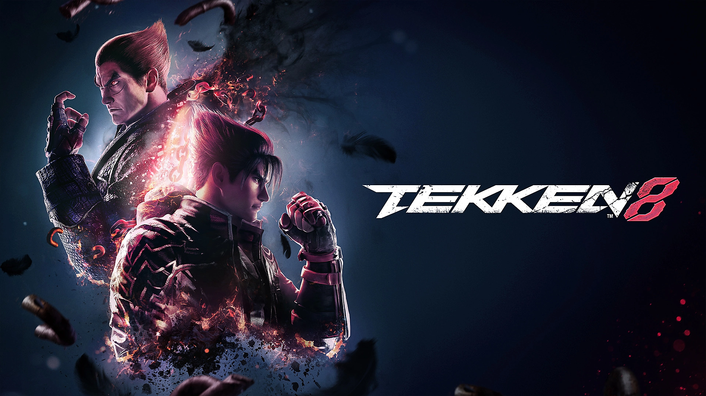
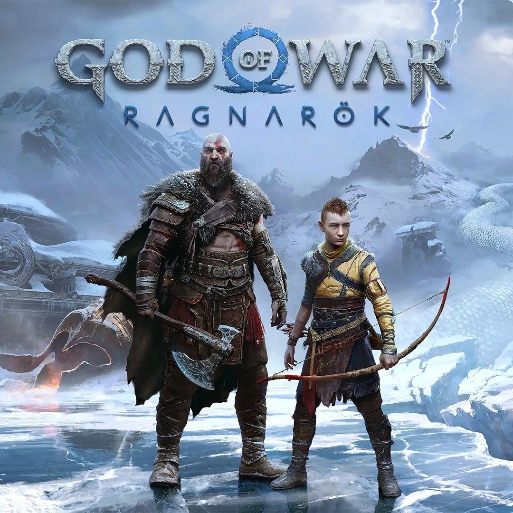

Resident Evil Requiem

Mesmo ainda não tendo jogado Resident Evil Requiem, é um dos jogos que mais estou ansioso para experimentar. Sou fã da franquia Resident Evil há muito tempo e já
joguei a maioria dos títulos da série, inclusive platinando vários deles. Por isso, cada novo lançamento sempre gera muita expectativa para mim. Estou curioso para ver como
será a história, as mecânicas de gameplay e as novidades que o jogo vai trazer para a franquia. Assim que eu jogar, com certeza vou compartilhar aqui no site minhas impressões e opiniões sobre a experiência.
Tekken 8

Ultimamente tenho jogado bastante Tekken 8, que na minha opinião é um ótimo jogo tanto para jogar com amigos quanto para disputar partidas online. Tenho me dedicado bastante ao modo ranqueado e estou evoluindo
cada vez mais nas lutas. Inclusive já consegui alcançar o rank Fujin, o que foi uma conquista bem legal para mim. Agora meu objetivo é continuar melhorando no jogo, aprender mais sobre os personagens e as mecânicas, e tentar chegar pelo menos ao rank Tekken God no online.
God of War Ragnarok

Recentemente zerei God of War Ragnarök e, no geral, gostei bastante da experiência. O jogo traz mais mecânicas e conteúdos em comparação com God of War, o que deixa a jogabilidade mais variada. Mesmo assim, acabei achando que o jogo de 2018 ainda é superior
em vários aspectos, principalmente no ritmo da história e na forma como tudo se desenvolve. Apesar disso, gostei muito da narrativa de Ragnarök e de como a história continua a jornada dos personagens. No fim das contas, foi uma ótima experiência e agora fico ansioso para ver como será a próxima sequência da franquia.